Survival Guide
- Create an account
Instructions
- New users can sign up by clicking on the Create New Account link on the login page. The image is shown below.
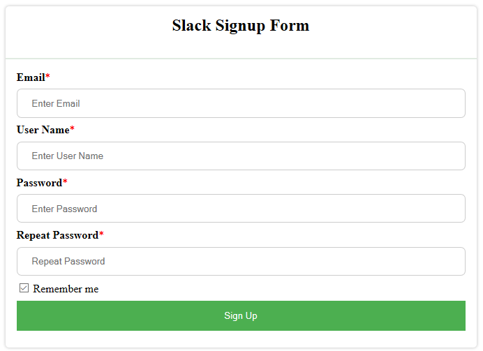
- Fill out the required fields and click 'Sign up'.
- Change Profile Picture
Instructions
- On the vertical navigation bar present on the left-hand side of the homepage, you will find 'Select image to upload:' option.
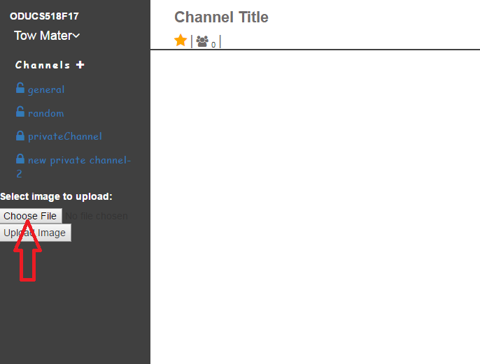
- Please click on the 'Choose File' option right below it.
- Please choose a .jpg or a .png file.
- Click on 'Upload Image' after having chosen a file.
- Sign-out
Instructions
- Users can logout by clicking on their username.
- On clicking the username, a dropdown menu appears which contains the option to 'LogOut' as shown in the image below.
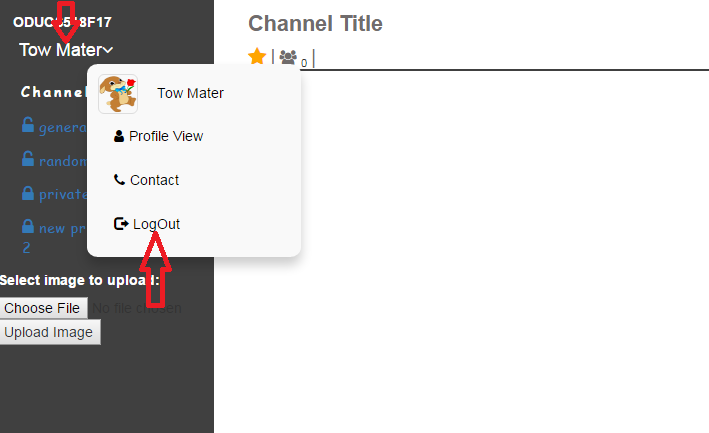
Channels
- Channel Members
Instructions
- Users can view the other members of channel by clicking on the icon as shown in the below figure.
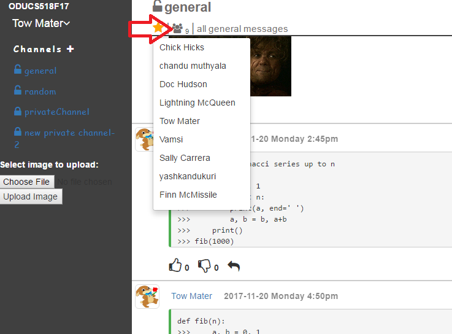
- Create a new channel
Instructions
- Users can create a new channel by clicking on the '+' icon next to Channels in order to create a new channel as shown in the figure below.
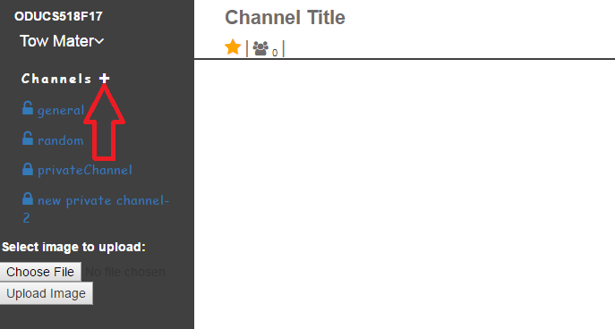
- Provide a name for your channel, its purpose and add the users you'd like to have on your channel.
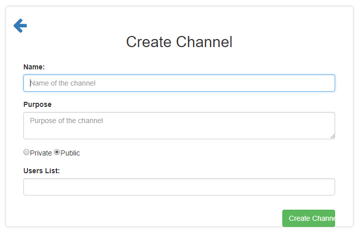
- Users have options to create either a public channel in which any user could join or a private channel which requires an invite from the owner of the channel.
- A user will have to remain logged-in for creating a channel.
- Add members
Instructions
- A channel owner will be able to add members at the time of creating a channel.
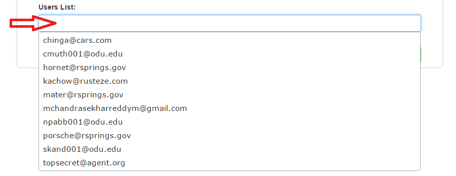
- Invite members
Instructions
- The owner of a channel can invite other users to the channel that has been created.
- A user can select from the list of channels that displays all existing public channels. Even the private channels will be displayed 'if' they have been created by that user.
- An owner can invite new members by clicking on this. Refer below image.
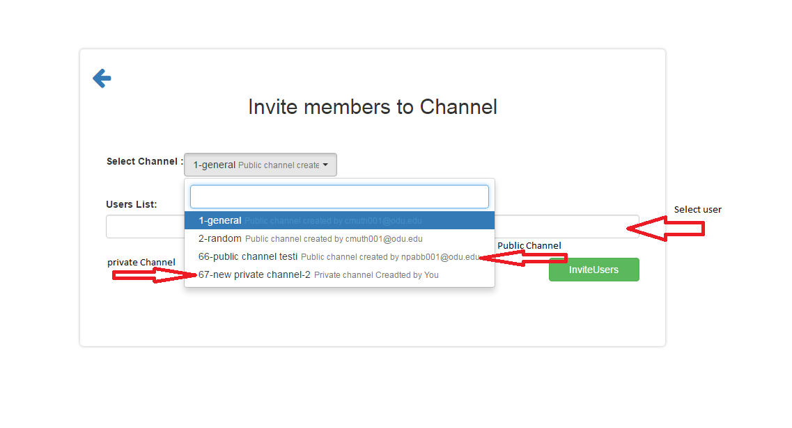
Messages
- User search Profile
Instructions
- Users can look up other users in the search bar and view their profile, located on the top right corner of the webpage.
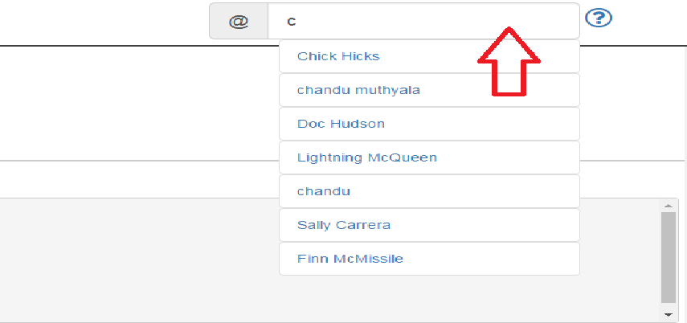
- Post
Instructions
- Text messages can be posted by typing a message in the text field and pressing 'Enter' Refer the image below.
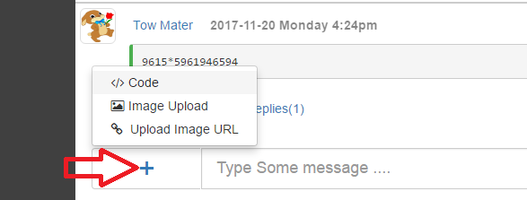
- Users can also upload local images, post code snippets, and upload image urls by clicking on the '+' icon as shown in the image above.
- Image urls can be of the formats - .png, .jpeg/jpg, .gif, .tiff/tif.
- Please note that empty messages cannot be posted.
- Please refrain from using profane or vulgar language.
- Reactions
Instructions
- Users can also reply to the existing posts. Replies could be in the form of a message or a code.
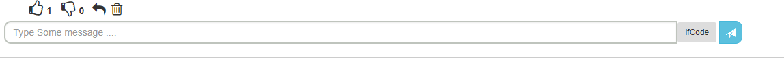
- Users can react to already existing posts.
- Users can either like or dislike a post.


Happy Surviving!